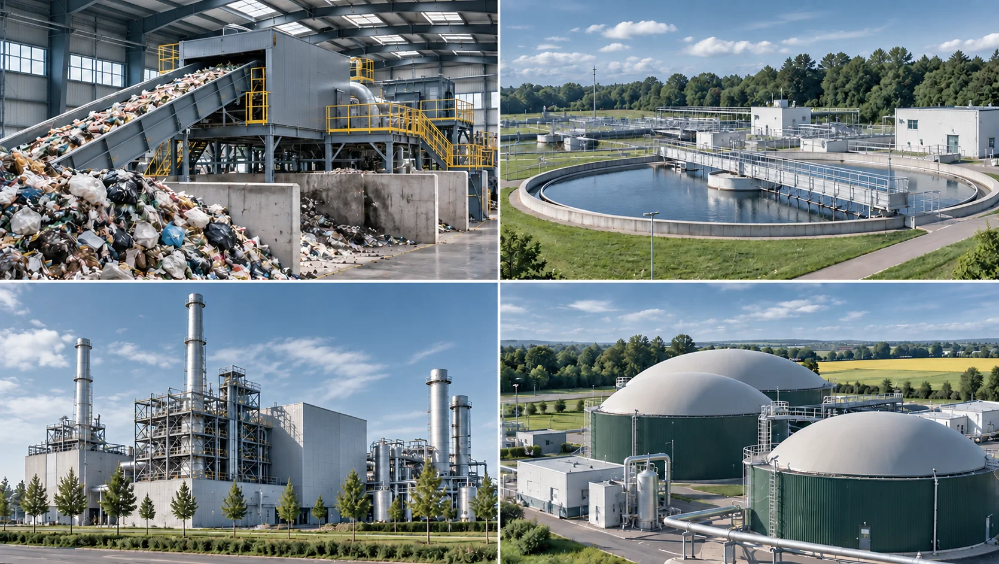

Waste. Water. Energy.
Integrated infrastructure and recovery solutions – from analysis through delivery to operation.

Waste & Circular Economy
From sorting and recycling to material and energy recovery. Client-specific recycling and waste-to-energy concepts.
Water & Wastewater
Planning, modernisation and expansion of municipal and industrial infrastructure, as well as innovative treatment of sewage sludge and wet residues.
Energy
Energy and utility concepts, energy recovery from residual materials, and the integration of heat, power, generation, grid and storage.
Energy from substitute fuel
Substitute fuel derived from waste replaces fossil coal in the steam boiler. The steam generated produces electricity as well as usable process and district heat; the flue gas treatment keeps emissions within the statutory limits.
Planning an infrastructure or recovery project?
Talk to us about feedstock, project location, capacity and objectives.